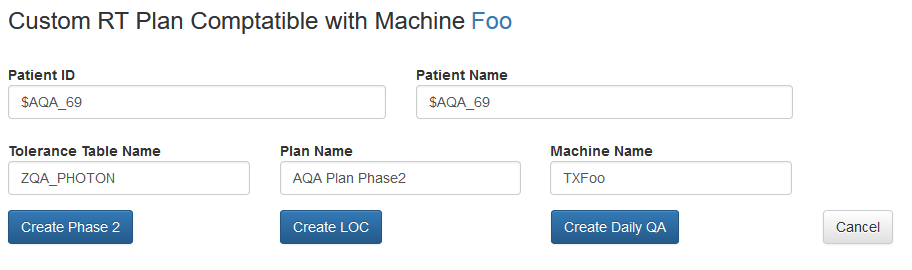
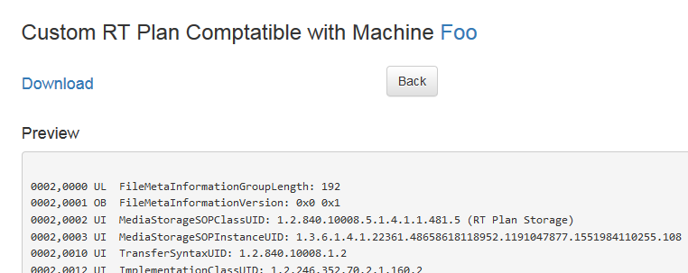

@@title@@
To run the Phase 2 tests, you must submit a set of EPID images created by a compatible RTPLAN.
Often simply copying an RTPLAN from another institution does not work because of incompatibilities
with machine
name, beam energies, and tolerance table names. The Customize Plan feature
addresses this.
The steps are:
- Navigate to Administration --> Machines
- Select the machine from the list that you wish to make the plan for. If it does not exist, use Create
new
Machine
to create
it.
- Make sure that the list of beam energies that your machine supports is correct.
- Click the Customize Plan button
The following screen shot shows an example for a machine named Foo.

Fill in the fields:
Patient ID:
This will be filled with a default value but you may override it with something that
will make it convenient
for
you to track in your system.
Patient Name:
Similar to Patient ID
Tolerance Table Name:
Initially empty, this must be filled with a tolerance table that your treatment planning system supports.
Plan Name:
Set by default, this can be overridden, often reflecting a version of the plan.
Machine Name:
The name that your planning system expects. Some planning systems have different values for machine ID and
machine name.
Click one of the the Create buttons and a preview will be shown (Phase 2 is shown here):

Click Download to download a DICOM version of the RTPLAN.
The RTPLAN may then be imported into your planning system.
Note: The AQA keeps track of custom made plans, so it is not necessary to upload them later.
Technical Notes
- Custom plans are created by taking a master plan and modifying it. The collimator and beam energies in
machine configuration parameters are used, so it is important that they be correct.
-
There is a master plan for each of the Millenium and HD MLC collimators. The choice of which to start from
is
determined by the
Collimator
choice in machine configuration.
- All treatment machines are expected to support 6 MeV, and that is the energy that most beams in Phase 2 use.
Beyond that, machines may be set up to handle different energies. The master plans have a J18G0-6F beam
which is copied for the other beam energies that a machine may support. For example, if a machine support 16
Mev, then a J18G0-16F beam will be added to the custom plan.
- The order of the beams in the plan was chosen to optimize delivery time by minimizing mechanical movement.
When a plan is created, each beam name is prefixed with a number that, when sorted, will preserve this
order.
- When a plan is created, it uses all new UIDs. This is so it will be entirely separate from other versions of
the plan and can be imported into a treatment planning system without conflicts.
- The instance creation date and time of the plan are automatically set to the current time to help keep track
of plans.